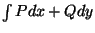

|
You are here : Control System Design - Index | Book Contents | Appendix C | Section C.2 C. Results From Analytic Function TheoryC.2 Independence of pathConsider functions of two independent variables, x and y. (The reader can think of x as the real axis and y as the imaginary axis.) Let P(x, y) and Q(x, y) be two functions of x and y, continuous in some domain D. Say we have a curve C in D, described by the parametric equations
We can then define the following line integrals along the path C from point A to point B inside D.
Definition C.1 The line integral  is said to be independent of the path in D if, for every pair of points A and B in D, the value of the integral is independent of the path followed from A to B. We then have the following result Theorem C.1 If is independent of the path in D, then there exists a function F(x, y) in D such that
holds throughout D. Conversely, if a function F(x, y) can be found such that (C.2.4) holds, then is independent of the path. Proof Suppose the integral is independent of the path in D. Then, choose a point (x0,y0) in D and let F(x, y) be defined as follows
where the integral is taken on an arbitrary path in D joining (x0, y0) and (x, y). Since the integral is independent of the path, the integral does indeed depend only on (x, y) and defines the function F(x, y). It remains to establish (C.2.4).
For a particular (x, y) in D, choose (x1, y) so that and the line segment from (x1, y) to (x, y) in D, is as shown in Figure C.1. Because of independence of the path
We think of x1 and y as being fixed while (x, y) may vary along the horizontal line segment. Thus F(x, y) is being considered as function of x. The first integral on the right hand side of (C.2.6) is then independent of x. Hence for fixed y, we can write
The fundamental theorem of Calculus now gives
A similar argument shows that
Conversely, let (C.2.4) hold for some F. Then, using a parameter t,
Theorem C.2 If the integral is independent of the path in D, then
on every closed path in D. Conversely if (C.2.13) holds for every simple closed path in D, then is independent of the path in D. Proof Suppose the integral is independent of the path. Let C be a simple closed path in D and divide C into arcs and as in Figure C.2.
The converse result is established by reversing the above argument.
Theorem C.3 If P(x, y) and Q(x, y) have continuous partial derivatives in D and is independent of the path in D, then
Proof By Theorem C.1, there exists a function F such that (C.2.4) holds. Equation (C.2.16) follows by partial differentiation.
Actually we will be particularly interested in the converse to Theorem C.3. However, this holds under slightly more restrictive assumptions, namely a simply connected domain. |